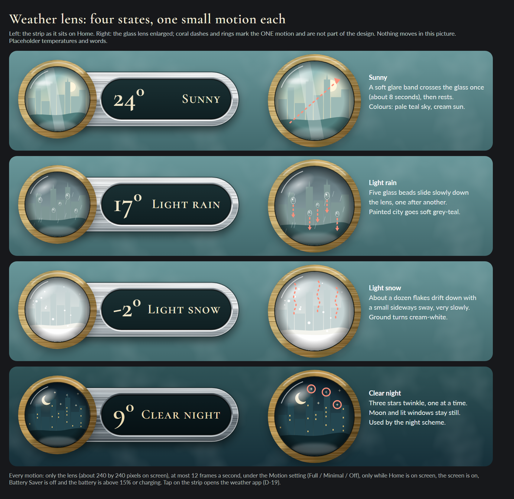
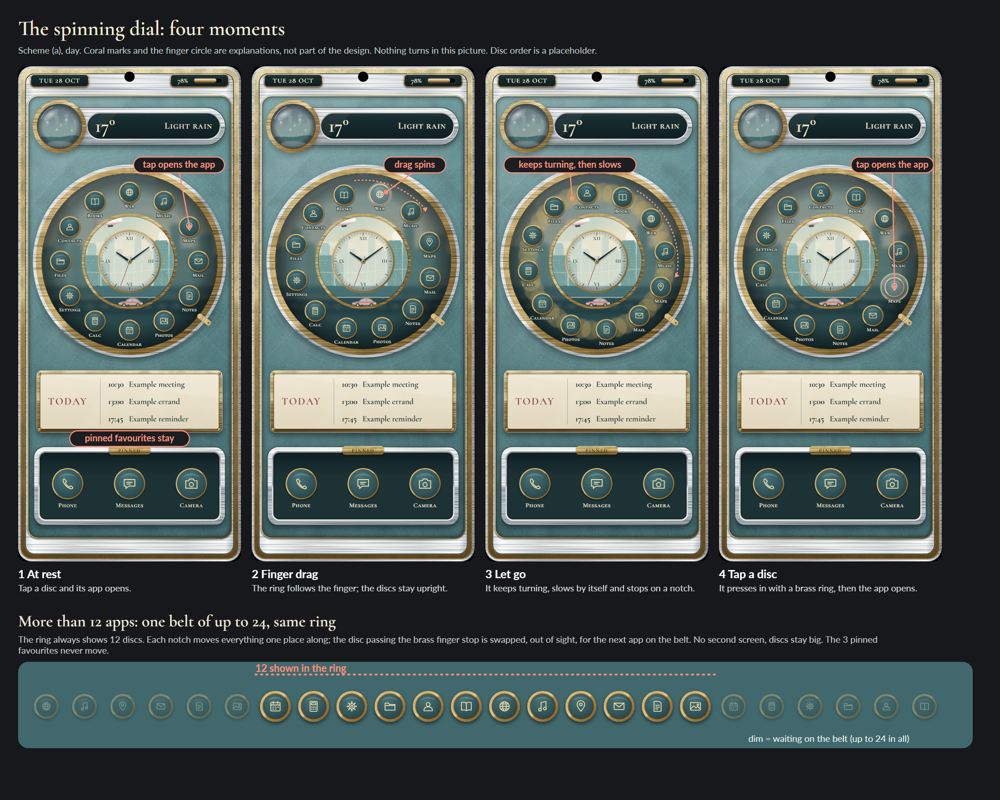
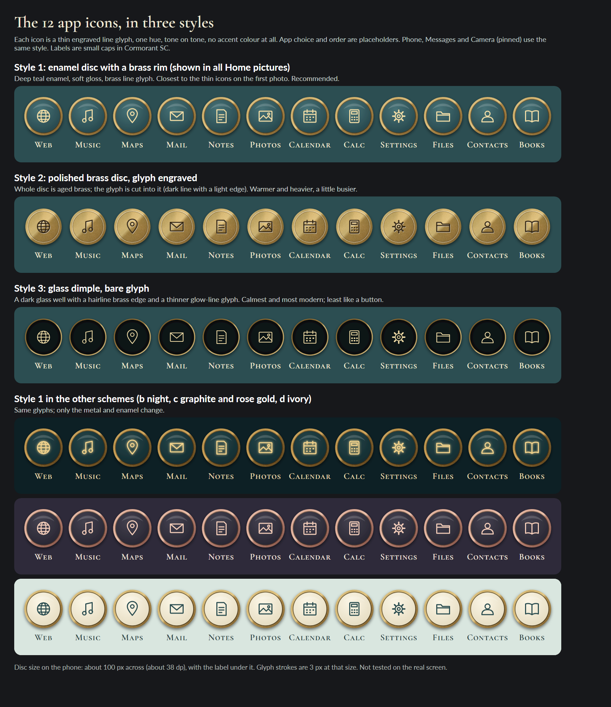

<!doctype html><meta charset=utf-8><body style="width:2860px;background:#17181b"><script src="lib.js"></script><script>
const cap=(t,d)=>`<div style="font:700 25px Lato;color:#fff;margin-top:10px">${t}</div><div style="font:400 19px Lato;color:#c4ccc9;margin-top:2px;max-width:450px">${d}</div>`;
const one=(src,t,d)=>`<div style="width:450px">${cap(t,d)}</div>`;
mount(`<div style="padding:34px 40px;color:#f1ead6"><div style="font:600 52px CG,serif">Refined handheld (round 4): everything side by side</div><div style="font:400 21px Lato;color:#bfc7c4;margin:8px 0 26px">Left: round 3 for comparison (rejected as too bold). Then the same Home in four schemes, and two density variants of scheme (a). Pictures only; nothing ran on the phone.</div>
<div style="display:flex;gap:22px;align-items:flex-start">`
+one('../payphone/home-red-day.png','Round 3 (before)','Flat red lacquer, wax seals. Rejected.')
+one('home-a-day-i.png','(a) Chrome, aged brass, dusty teal; layout i','DEFAULT, day. As round 3 structure.')
+one('home-a-day-ii.png','(a) layout ii: calmer','Bigger dial, slimmer placard.')
+one('home-b-night.png','(b) Same at night','Warm lamp glow, lit windows.')
+one('home-c-graphite.png','(c) Graphite and rose gold','Dark, plum-slate paint, one sage accent.')
+one('home-d-ivory.png','(d) Ivory enamel and brass','Light scheme for daytime.')
+`</div><div style="display:flex;gap:40px;margin-top:44px;align-items:flex-start"><div>${cap('Weather lens: four states','One small motion each, under the Motion setting.')}</div><div>${cap('Spinning dial and the belt of up to 24','Drag spins, tap opens, pinned favourites stay.')}</div></div>
<div style="margin-top:44px">${cap('Icon sheet','12 icons in style 1, plus two alternative glyph styles and the other schemes.')}</div></div>`)
</script>
